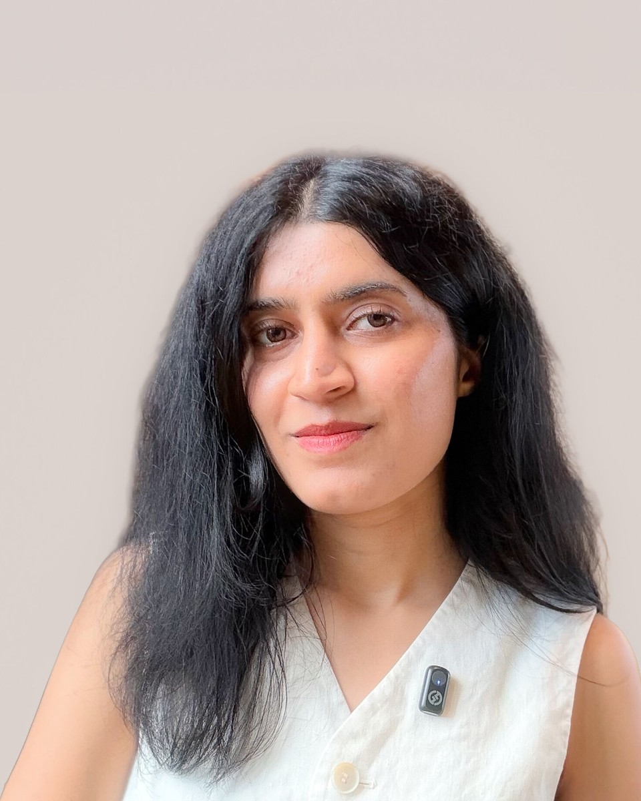
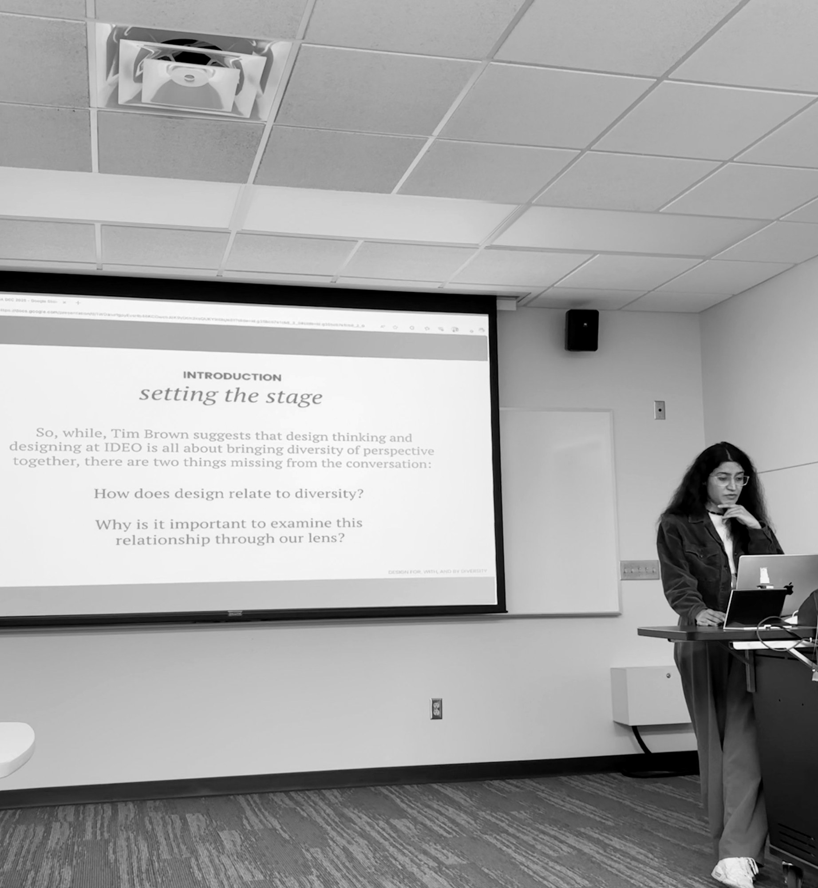

Shreya Thakkar
Senior UX Researcher & StrategistMixed-methods and human factors research
for hardware, software, and AI experiences.
LinkedIn ↗Email ↗Speaking at SXSW EDU · Austin, March 2027 ↗
Experience
- Electrolux GroupSenior UX ResearcherSept 2023 – Sept 2026
- PDR CorporationUX & Design ResearcherJuly 2021 – Sept 2023
- PolestarService Designer (Sponsored project)Jan 2023 – May 2023
- Neumayr DesignDesign & Innovation StrategistJune 2020 – July 2021
- SteelcaseGlobal Design InternMay 2019 – Sept 2019
Education
- MS, Environmental DesignArtCenter College of Design
- B.Des, Interior ArchitectureInstitute of Environmental Design
- Design studiesNational Institute of Design
Certificates
- Human Factors & Usability Engineering2026
- AI for User Research2025
- Strategic Behavioural Design2024
- Service Design2023
- Ethics in Design2023
- Futurist2023
Methods
- QualitativeInterviews, in-home ethnography, diary studies, usability testing
- QuantitativeSurveys, A/B testing, behavioral analysis
- AILLM evaluation, failure testing, human-AI interaction, responsible AI
- StrategyFutures and foresight, scenario planning
- Research operationsRecruiting, vendor management, quality standards
Jury and review
- Globee Awards, AI category2025
- American Business Awards2025
- IDSA Student Merit Awards2025
- World Design Congress, London2025
- Cumulus, Nantes2025
Conferences
- OneGW Summit, George Washington UniversitySpeaker · WorkshopVirtual · 2026
- IDSA International Design ConferenceSpeakerPasadena, USA · 2026
- IDSA Women in Design Deep DivePanelistDenver, USA · 2026
- World Usability CongressSpeakerGraz, Austria · 2025
- IASDRSpeaker · Peer-reviewed paperTaipei, Taiwan · 2025
- Design Principles & PracticesSpeakerSingapore · 2025
- Interdisciplinary Social SciencesSpeakerMálaga, Spain · 2025
- AIGA WeaveSpeakerNormal, USA · 2025
- George Washington University, Corcoran SchoolSpeakerWashington DC, USA · 2024
Contact
Talks and workshops

World Usability Congress, Austria 
World Usability Congress, Austria 
IDSA Women in Design, DenverPhoto credit: Andrew Shafer 
DTDC, Washington DC 
AIGA Weave, Illinois